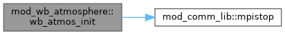
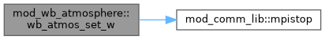

|
MPI-AMRVAC 3.2
The MPI - Adaptive Mesh Refinement - Versatile Advection Code (development version)
|
Well-balanced atmosphere module. More...
Functions/Subroutines | |
| subroutine, public | wb_atmos_init (pa, ra, grav, jmax, ds, gzone, grav_dir, irho, ip) |
| Build grid-aligned HSE tables from a fine 1D reference profile. | |
| subroutine, public | wb_atmos_set_w (ixil, ixol, w, x) |
| Set w to the equilibrium state (rho, v=0, p) at each cell position. | |
| subroutine, public | wb_atmos_get_eq (x_grav, rho_eq, p_eq) |
| Look up equilibrium (rho, p) at an arbitrary coordinate along the gravity direction. Uses nearest-cell lookup from the grid-aligned table. | |
Variables | |
| double precision, dimension(:), allocatable, public | wb_pa |
| Grid-aligned discrete HSE (built at finest AMR resolution) | |
| double precision, dimension(:), allocatable, public | wb_ra |
| equilibrium density | |
| integer, public | wb_n_grid = 0 |
| table size | |
Well-balanced atmosphere module.
Builds grid-aligned hydrostatic equilibrium tables at the finest AMR resolution from a user-provided fine 1D reference profile. Provides routines for setting the initial condition and boundary conditions from these tables.
The module is EoS-independent: it receives p(s) and rho(s) and never calls EoS routines. The multiplicative HSE recurrence uses T = p/rho which is valid for any equation of state.
Usage:
| subroutine, public mod_wb_atmosphere::wb_atmos_get_eq | ( | double precision, intent(in) | x_grav, |
| double precision, intent(out) | rho_eq, | ||
| double precision, intent(out) | p_eq | ||
| ) |
Look up equilibrium (rho, p) at an arbitrary coordinate along the gravity direction. Uses nearest-cell lookup from the grid-aligned table.
Definition at line 194 of file mod_wb_atmosphere.t.
| subroutine, public mod_wb_atmosphere::wb_atmos_init | ( | double precision, dimension(:), intent(in) | pa, |
| double precision, dimension(:), intent(in) | ra, | ||
| double precision, dimension(:), intent(in) | grav, | ||
| integer, intent(in) | jmax, | ||
| double precision, intent(in) | ds, | ||
| double precision, intent(in) | gzone, | ||
| integer, intent(in) | grav_dir, | ||
| integer, intent(in) | irho, | ||
| integer, intent(in) | ip | ||
| ) |
Build grid-aligned HSE tables from a fine 1D reference profile.
The fine table (pa, ra) spans [xmin - gzone, xmax + gzone] along the gravity direction, evenly spaced at ds. The gravity array grav(jmax) gives the gravitational acceleration at each fine table point.
The grid-aligned table is built at the finest AMR resolution using the multiplicative trapezoidal recurrence, which matches the discrete HSE that the WB reconstruction preserves.
| [in] | pa | fine pressure table |
| [in] | ra | fine density table |
| [in] | grav | fine gravity table |
| [in] | jmax | fine table size |
| [in] | ds | fine table spacing |
| [in] | gzone | ghost zone width (code units) |
| [in] | grav_dir | gravity direction (1, 2, or 3) |
| [in] | irho | w-array index for density |
| [in] | ip | w-array index for pressure |
Definition at line 56 of file mod_wb_atmosphere.t.

| subroutine, public mod_wb_atmosphere::wb_atmos_set_w | ( | integer, intent(in) | ixi, |
| integer, intent(in) | l, | ||
| integer, intent(in) | ixo, | ||
| l, | |||
| double precision, dimension(ixi^s, 1:nw), intent(inout) | w, | ||
| double precision, dimension(ixi^s, 1:ndim), intent(in) | x | ||
| ) |
Set w to the equilibrium state (rho, v=0, p) at each cell position.
Point-value sample of the trap-rule-built grid table at cell centres. Consistent with the legacy_trap WB transform which expects point-value IC matching its own trap-rule recurrence at L_max.
On exit: w(rho_) = rho_eq, w(mom(:)) = 0, w(p_) = p_eq. The caller must call phys_to_conserved afterwards.
Definition at line 165 of file mod_wb_atmosphere.t.

| integer, public mod_wb_atmosphere::wb_n_grid = 0 |
table size
Definition at line 32 of file mod_wb_atmosphere.t.
| double precision, dimension(:), allocatable, public mod_wb_atmosphere::wb_pa |
Grid-aligned discrete HSE (built at finest AMR resolution)
equilibrium pressure
Definition at line 30 of file mod_wb_atmosphere.t.
| double precision, dimension(:), allocatable, public mod_wb_atmosphere::wb_ra |
equilibrium density
Definition at line 31 of file mod_wb_atmosphere.t.